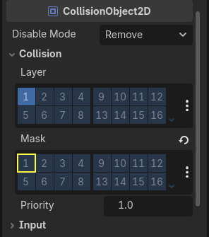

Tạo kẻ địch
Giờ là lúc tạo những kẻ địch mà người chơi phải né tránh. Hành vi của chúng không quá phức tạp: các mob sẽ xuất hiện ngẫu nhiên ở các cạnh màn hình, chọn một hướng ngẫu nhiên và di chuyển theo đường thẳng.
Chúng ta sẽ tạo scene Mob, sau đó có thể tạo instance của nó để tạo ra bao nhiêu kẻ địch độc lập trong game tùy ý.
Thiết lập node
Nhấn Scene -> New Scene trên menu trên cùng và thêm các node sau:
RigidBody2D (đặt tên
Mob)
Đừng quên đặt các node con để chúng không thể được chọn, như bạn đã làm với scene Player. Việc này được thực hiện bằng cách chọn node cha (RigidBody2D) trong Scene tree dock, rồi dùng nút ở đầu trình chỉnh sửa 2D (Ctrl + G hoặc Cmd + G trên macOS).
Chọn node Mob và đặt thuộc tính Gravity Scale của nó trong mục RigidBody2D của Inspector thành 0. Điều này sẽ ngăn mob rơi xuống dưới.
Ngoài ra, trong inspector của node Mob, ở mục CollisionObject2D, mở rộng nhóm Collision và bỏ chọn ô 1 trong thuộc tính Mask. Điều này đảm bảo các kẻ địch không va chạm với nhau.

Thiết lập AnimatedSprite2D như bạn đã làm cho người chơi. Lần này, chúng ta có 3 hoạt ảnh: fly, swim và walk. Mỗi hoạt ảnh có hai hình ảnh trong thư mục art.
Thuộc tính Animation Speed phải được đặt cho từng hoạt ảnh riêng lẻ. Đặt nó thành 3 cho cả 3 hoạt ảnh.

Bạn có thể dùng các nút "Play Animation" bên phải ô nhập Animation Speed để xem trước hoạt ảnh.
Chúng ta sẽ chọn ngẫu nhiên một trong các hoạt ảnh này để các mob trông đa dạng hơn.
Giống hình ảnh người chơi, các hình ảnh kẻ địch này cần được thu nhỏ. Đặt thuộc tính Scale của AnimatedSprite2D thành (0.75, 0.75).
Như trong scene Player, thêm một CapsuleShape2D cho va chạm. Để căn shape với hình ảnh, bạn cần đặt thuộc tính Rotation thành 90 (trong mục "Transform" ở Inspector).
Lưu scene.
Script kẻ địch
Thêm script vào Mob như sau:
extends RigidBody2D
using Godot;
public partial class Mob : RigidBody2D
{
// Don't forget to rebuild the project.
}
Giờ hãy xem phần còn lại của script. Trong _ready(), chúng ta phát hoạt ảnh và chọn ngẫu nhiên một trong ba loại hoạt ảnh:
func _ready():
var mob_types = Array($AnimatedSprite2D.sprite_frames.get_animation_names())
$AnimatedSprite2D.animation = mob_types.pick_random()
$AnimatedSprite2D.play()
public override void _Ready()
{
var animatedSprite2D = GetNode<AnimatedSprite2D>("AnimatedSprite2D");
string[] mobTypes = animatedSprite2D.SpriteFrames.GetAnimationNames();
animatedSprite2D.Play(mobTypes[GD.Randi() % mobTypes.Length]);
}
Đầu tiên, chúng ta lấy danh sách tên hoạt ảnh từ thuộc tính sprite_frames của AnimatedSprite2D. Thuộc tính này trả về một Array chứa cả ba tên hoạt ảnh: ["walk", "swim", "fly"].
Trong mã GDScript, chúng ta dùng phương thức Array.pick_random để chọn ngẫu nhiên một trong các tên hoạt ảnh này. Trong khi đó, ở mã C#, chúng ta chọn một số ngẫu nhiên từ 0 đến 2 để chọn một tên trong danh sách (chỉ số mảng bắt đầu từ 0). Biểu thức GD.Randi() % n chọn một số nguyên ngẫu nhiên từ 0 đến n-1.
Cuối cùng, chúng ta gọi play() để bắt đầu phát hoạt ảnh đã chọn.
Phần cuối cùng là làm cho kẻ địch tự xóa khi chúng ra khỏi màn hình. Kết nối signal screen_exited() của node VisibleOnScreenNotifier2D với Mob và thêm đoạn mã này:
func _on_visible_on_screen_notifier_2d_screen_exited():
queue_free()
// We also specified this function name in PascalCase in the editor's connection window.
private void OnVisibleOnScreenNotifier2DScreenExited()
{
QueueFree();
}
queue_free() là hàm về cơ bản sẽ 'giải phóng', hay xóa, node vào cuối frame.
Vậy là scene Mob đã hoàn tất.
Khi người chơi và kẻ địch đã sẵn sàng, ở phần tiếp theo chúng ta sẽ kết hợp chúng trong một scene mới. Chúng ta sẽ cho kẻ địch xuất hiện ngẫu nhiên quanh bảng game và di chuyển về phía trước, biến dự án thành một game có thể chơi được.